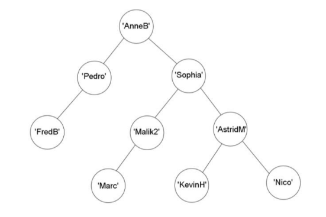

Révision sur les arbres (Structure de données arborescentes)⚓︎
Crédits
- Sujet 2022, Asie, J2, Ex. 2 Mise en page et correction par Sébastien Hoarau
- Sujet 2022, Nouvelle-Calédonie, J1, Ex. 4 Mise en page et correction par Sébastien Hoarau
Nom d'auteur dans un ABR⚓︎
D'après 2022, Asie, J2, Ex. 2
Un arbre binaire de recherche est un arbre binaire pour lequel chaque nœud possède une étiquette dont la valeur est supérieure ou égale à toutes les étiquettes des nœuds de son fils gauche et strictement inférieure à celles des nœuds de son fils droit. On rappelle que :
- sa taille est son nombre de nœuds ;
- sa hauteur est le nombre de niveaux qu'il contient.
Un éditeur réédite des ouvrages. Il doit gérer un nombre important d'auteurs de la littérature. Pour stocker le nom des auteurs, il utilise un programme informatique qui les enregistre dans un arbre binaire de recherche.
- L'arbre vide sera noté
Nullpour les algorithmes de cet exercice. - Si
Aest un nœud non vide,valeur(A)renvoie le nom de l'auteur ;fils_gauche(A)renvoie le fils gauche du nœudAetfils_droit(A)renvoie le fils droit du nœudA.
L'ordre alphabétique est utilisé pour classer le nom des auteurs. Par exemple, on a : APOLLINAIRE < BAUDELAIRE
Ainsi, pour tout nœud A, si fils_gauche(A) et fils_droit(A) ne sont pas Null, on a : valeur(fils_gauche(A)) < valeur(A) < valeur(fils_droit(A)).
Exemple d'arbre binaire de recherche
L'arbre binaire A1 suivant est un arbre binaire de recherche :
1.
1.a) Recopier et compléter l'arbre binaire de recherche précédent en insérant successivement dans cet ordre les noms suivants : DUMAS ; HUGO ; ZWEIG ; ZOLA
Réponse
1.b) Quelle est la taille de l'arbre obtenu ? Quelle est la hauteur de cet arbre ?
Réponse
- Taille : 8
- Hauteur : 4
1.c) Plus généralement, si l'arbre est de hauteur \(h\), quel est le nombre maximal d'auteurs enregistrés dans cet arbre en fonction de \(h\) ?
Réponse
Si l'arbre est de hauteur \(h\) alors il y a \(2^h - 1\) auteurs au maximum.
Preuve
On montre d'abord que le nombre d'auteurs max au niveau \(n\) est \(2^{n-1}\). Immédiat par récurrence : au niveau 1, il n'y a qu'un auteur. La propriété est donc vraie. Si au niveau \(n\) on a \(2^{n-1}\) auteurs, alors, au niveau \(n+1\) on peut ajouter 2 auteurs pour chacun d'eux soit au total \(2\times 2^{n-1}\).
Un arbre complet de hauteur \(h\) a tous ses niveaux pleins et donc au total :
Et cette somme vaut \(2^h - 1\)
On définit ici l'équilibre d'un arbre binaire : il s'agit d'un nombre entier positif ou négatif. Il vaut 0 si l'arbre est vide. Sinon il vaut la différence des hauteurs des sous-arbres gauche et droit de l'arbre.
Exemple
Par exemple, si on considère l'arbre suivant que l'on nommera A2 :
Un arbre est dit équilibré si son équilibre vaut \(-1\), \(0\) ou \(1\). L'arbre précédent est donc équilibré.
2. Recopier et compléter l'arbre de ce dernier exemple avec les noms FLAUBERT, BALZAC, PROUST, SAND, WOOLF, COLETTE, CHRISTIE et AUDIARD quitte à modifier l'ordre d'insertion de manière que cet arbre reste équilibré.
Réponse
3. L'éditeur souhaite utiliser une fonction récursive recherche_auteur qui prend en paramètres abr un arbre binaire de recherche et nom un nom d'auteur. La fonction renvoie True si nom est une étiquette de l'arbre abr et False dans le cas contraire.
On donne le début de cette fonction ci-dessous, recopier la et compléter la dernière ligne :
def recherche_auteur(abr, nom):
if est_vide(abr):
return False
elif valeur(abr) == nom:
return True
else:
return ...
Une fois la fonction complétée, que renvoie l'appel recherche_auteur(A2, 'SIMENON') ? Justifier la réponse.
Réponse
def recherche_auteur(abr, nom):
if est_vide(abr):
return False
elif valeur(abr) == nom:
return True
else:
return recherche_auteur(fils_gauche(abr), nom) or\
recherche_auteur(fils_droit(abr), nom)
L'appel renvoie True. En effet, au premier appel, l'arbre n'est pas vide et la valeur de l'arbre ('KAFKA') n'est pas égale à la valeur recherchée. Il y a donc le premier appel récursif sur le sous-arbre gauche et la valeur 'SIMENON'. Cet appel va finir par renvoyer False (puisque 'SIMENON' n'est pas dans ce sous-arbre). Puisqu'on est sur l'évaluation d'un OU, le deuxième appel récursif est lancé, et finira par renvoyer True.
4. L'éditeur souhaite utiliser une fonction récursive hauteur(abr) qui prend en
paramètre un arbre binaire abr et renvoie la hauteur de cet arbre.
Écrire la fonction hauteur qui prend en entrée abr
un arbre binaire de recherche et renvoie sa hauteur. On pourra avoir recours
aux appels de fonctions prédéfinies min(val1, val2) et max(val1, val2) qui renvoient respectivement la plus petite et la plus grande valeur entre val1 et val2.
Réponse
def hauteur(abr):
if est_vide(abr):
return 0
else:
return 1 + max(hauteur(fils_gauche(abr)), hauteur(fils_droit(abr)))
Club d'Informatique⚓︎
D'après 2022, Nouvelle-Calédonie, J1, Ex. 4
Un club de passionnés d'informatique fonctionne de la façon suivante : pour être membre du club, à l'exception du fondateur ou de la fondatrice, il faut être parrainé. De plus, chaque membre peut parrainer au maximum deux personnes.
Dans ce club, on distingue trois profils de membres :
- membre or : le membre a parrainé deux personnes ;
- membre argent : le membre a parrainé une seule personne ;
- membre bronze : le membre n'a parrainé personne.
On peut modéliser ce fonctionnement de parrainage à l'aide d'un arbre binaire dont les étiquettes sont les pseudonymes des membres du club. Lorsque deux personnes ont été parrainées, celle qui a été parrainée en premier apparait comme racine du sous-arbre à gauche tandis que l'autre est racine du sous-arbre à droite.
On donne ci-dessous l'arbre \(P\) représentant les membres du club issus des parrainages de AnneB, fondatrice du club. Par exemple, Sophia a parrainé Malik2 avant AstridM.

On munit la structure de données ArbreBinaire des opérations suivantes :
Interface de la structure ArbreBinaire
def est_vide(arbre: ArbreBinaire) -> bool:
"""renvoie True si arbre est vide, False sinon"""
def racine(arbre: ArbreBinaire) -> str:
"""renvoie l'étiquette du nœud racine de arbre"""
def gauche(arbre: ArbreBinaire) -> ArbreBinaire:
"""renvoie le sous-arbre à gauche de arbre"""
def droite(arbre: ArbreBinaire) -> ArbreBinaire:
"""renvoie le sous-arbre à droite de arbre"""
1) On appelle feuille, un nœud qui ne possède pas de successeurs ou dit autrement dont l'arbre dont il est la racine possède deux sous-arbres vides. On définit la hauteur d'un arbre binaire non vide comme la longueur (en nombre de nœuds) du plus long chemin allant de la racine à une feuille. Un arbre vide a une hauteur égale à \(0\).
1.a) Indiquer la hauteur de l'arbre \(P\)
Réponse
L'arbre binaire \(P\) a une hauteur de \(4\) (par exemple en considérant le chemin qui va de la racine 'AnneB' jusqu'à la feuille 'Marc', on dénombre bien \(4\) nœuds, aucun autre chemin en dénombre plus).
1.b) Recopier et compléter la définition de la fonction récursive hauteur qui prend un arbre binaire en paramètre et renvoie la hauteur de cet arbre. On pourra utiliser la fonction max renvoyant la valeur maximale entre deux valeurs.
| hauteur | |
|---|---|
1 2 3 4 5 6 7 | |
Réponse
| hauteur | |
|---|---|
1 2 3 4 5 6 7 | |
1.c) Indiquer le type de la valeur renvoyée par la fonction hauteur
Réponse
Il s'agit d'un entier (type int)
2) La fonction membres ci-dessous prend un arbre binaire et une liste_membres en paramètres et ajoute, dans un certain ordre, les étiquettes de l'arbre à la liste_membres.
| membres | |
|---|---|
1 2 3 4 5 | |
2.a) En supposant la liste membres_p initialement vide, écrire la valeur de cette liste après l'appel membres(arbre_p, membres_p) où arbre_p référence l'arbre \(P\).
Réponse
>>> membres_p
['AnneB', 'Pedro', 'FredB', 'Sophia', 'Malik2', 'Marc', 'AstridM', 'KevinH', 'Nico']
2.b) Indiquer le nom du type de parcours d'arbre binaire réalisé par la fonction membres.
Réponse
Il s'agit d'un parcours préfixe (on traite la racine avant de traiter les sous-arbres à gauche et à droite).
3) Dans cette question, on s'intéresse aux profils des membres (or, argent ou bronze).
3.a) Indiquer les étiquettes des feuilles de l'arbre \(P\).
Réponse
Les feuilles sont : 'FredB', 'Marc', 'KevinH' et 'Nico'
3.b) À partir des propositions suivantes, indiquer le profil des membres dont les pseudonymes sont les étiquettes des feuilles.
- Réponse A : membre or
- Réponse B : membre argent
- Réponse C : membre bronze
- Réponse D : on ne peut pas savoir
Réponse
Puisqu'il s'agit des feuilles, cela signifie que ces nœuds n'ont pas de successeurs et donc que les membres associés n'ont parrainé personne. La bonne réponse est donc la C : membre bronze.
3.c) Écrire la fonction profil qui prend un arbre binaire non vide en paramètre et renvoie le profil du membre dont le pseudonyme est l'étiquette de la racine de l'arbre sous la forme d'une chaine de caractères : 'or', 'argent' ou 'bronze'. Par exemple, l'appel profil(arbre_p) doit renvoyer 'or'qui correspond au profil du membre 'AnneB', racine de \(P\).
Réponse
| profil | |
|---|---|
1 2 3 4 5 6 7 8 9 | |
Autre solution, consistant à compter le nombre de sous-arbres non vides qui correspond au nombre de personnes parrainées. On en déduit le profil :
| profil version 2 | |
|---|---|
1 2 3 4 5 6 7 8 | |
4) Afin d'obtenir un tableau dont chaque élément est un tuple contenant le pseudonyme d'un membre et son profil, on propose la fonction membres_profils définie ci-dessous :
| membres_profils | |
|---|---|
1 2 3 4 5 | |
On appelle cette fonction sur un arbre arbre_2 et on obtient ceci :
>>> liste_2 = []
>>> membres_profils(arbre_2, liste_2)
>>> liste_2
[('LeaC', 'or'), ('Ali', 'bronze'), ('Tom45', 'argent'), ('Vero', 'bronze')]
Dessiner un arbre possible pouvant correspondre à l'arbre_2.
Réponse
Comme pour la question 2b, on a à faire à un parcours préfixe donc 'LeaC' est la racine de l'arbre_2. Ensuite à gauche on a 'Ali' qui est une feuille (membre bronze). À droite on tombe sur 'Tom45' qui a parrainé un seul membre : 'Vero'.

5) Chaque année, les membres versent une cotisation en fonction de leur profil.
- membre or : cotisation de 20 €
- membre argent : cotisation de 30 €
- membre bronze : cotisation de 40 €
Écrire une fonction cotisation qui prend un arbre binaire et renvoie le total des cotisations reçues par le club dont arbre modélise les relations de parrainage. On pourra utiliser la fonction membres_profils de la question précédente.
Réponse
On commence par définir un dictionnaire des tarifs de cotisations :
tarifs = {'or': 20, 'argent': 30, 'bronze': 40}
| cotisations | |
|---|---|
1 2 3 4 5 6 7 | |
On peut aussi faire sans la fonction membres_profils :
| cotisations version 2 | |
|---|---|
1 2 3 4 5 6 7 | |